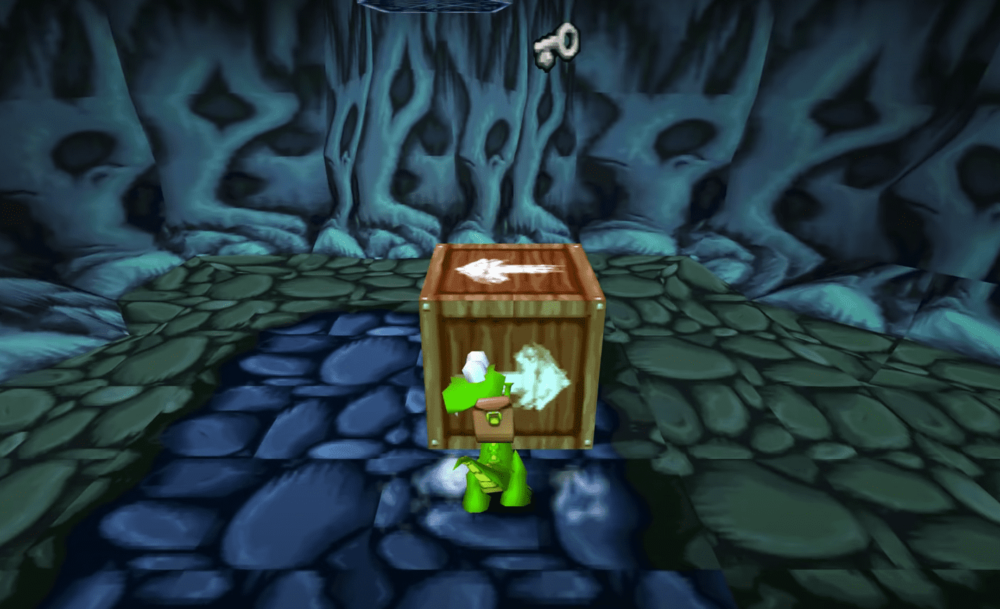
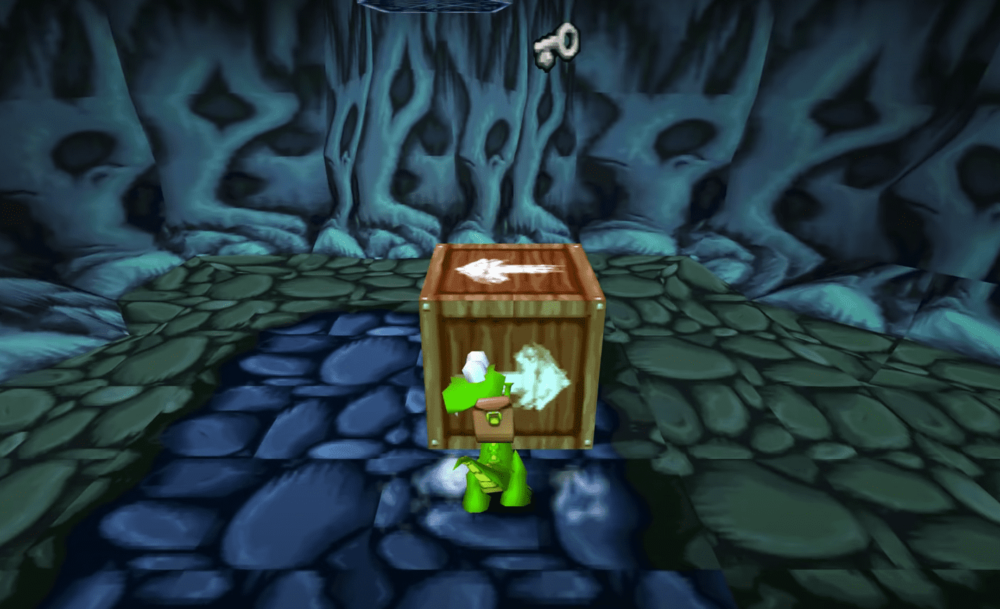
 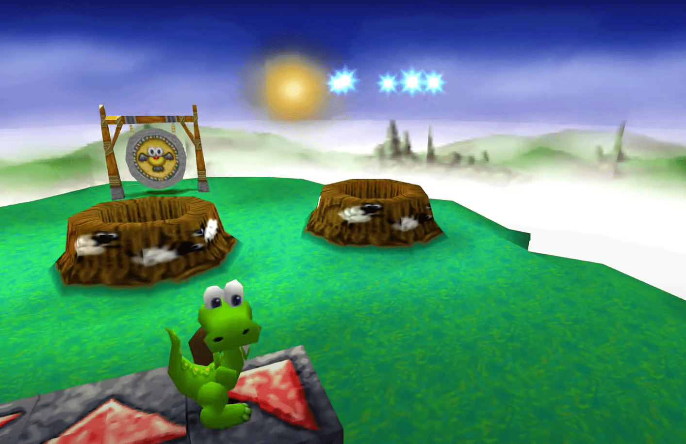
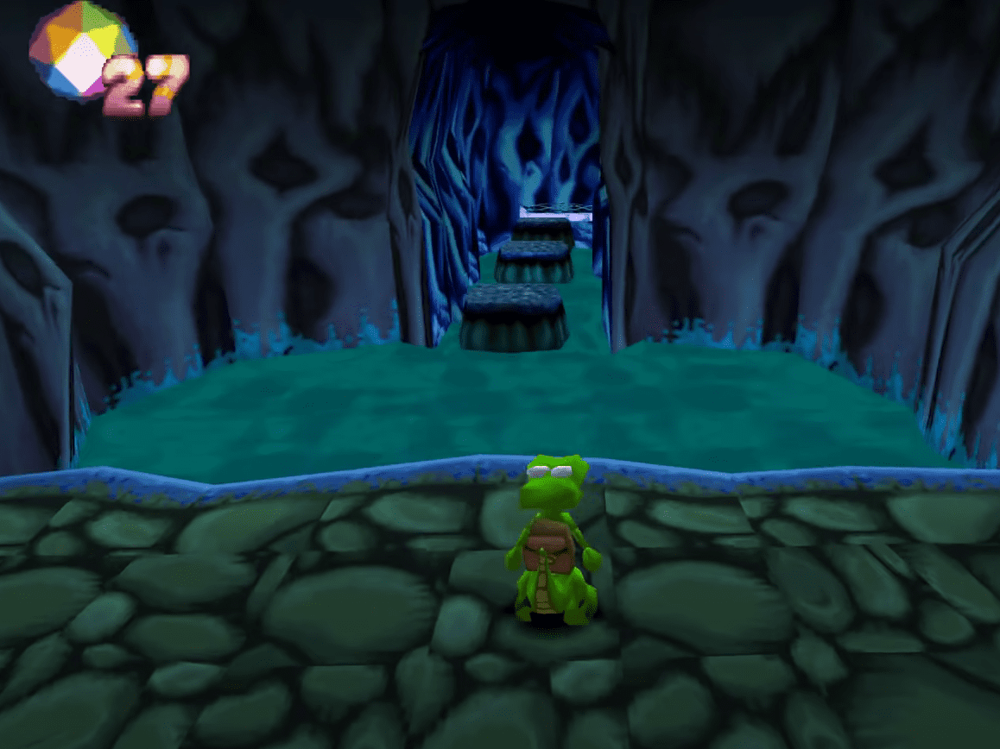
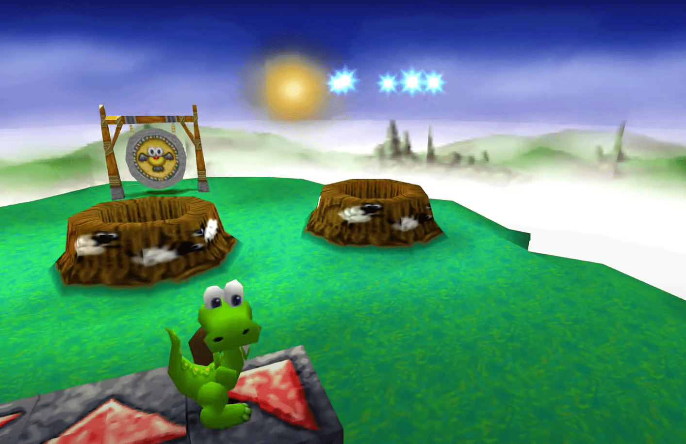
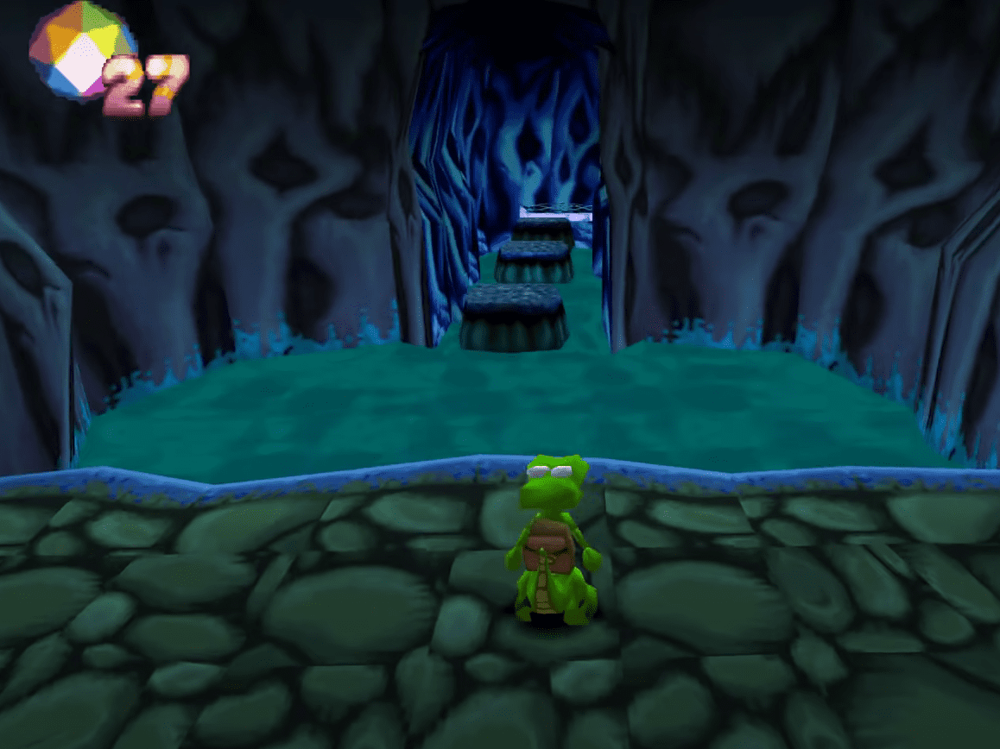
 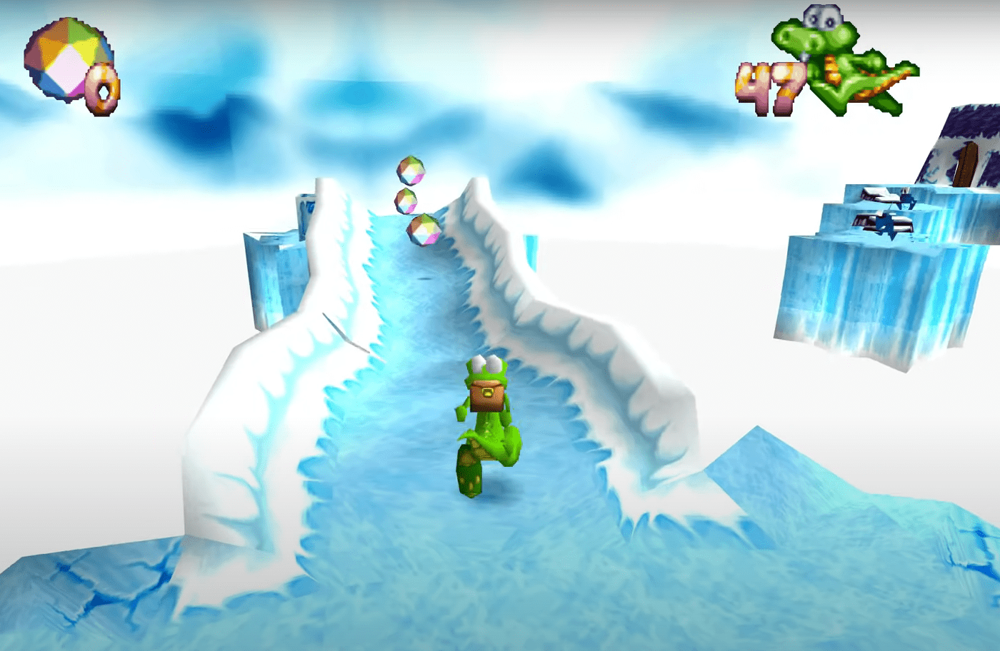
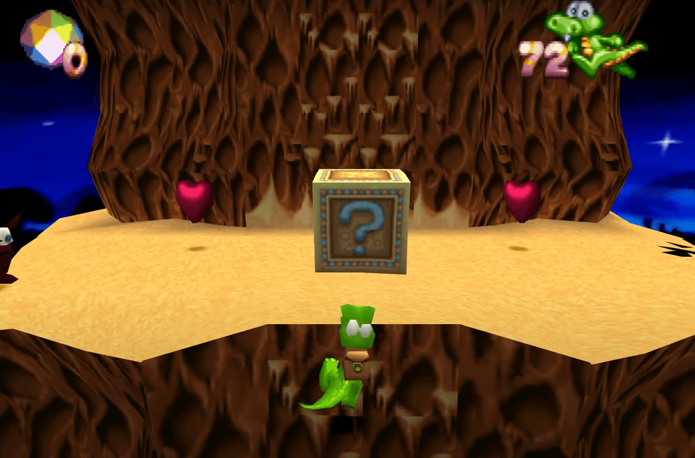
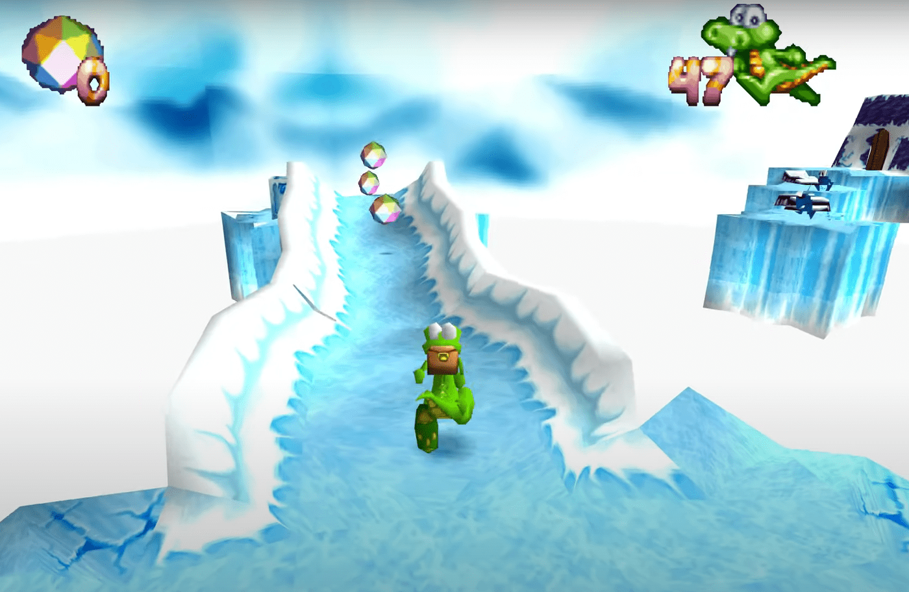
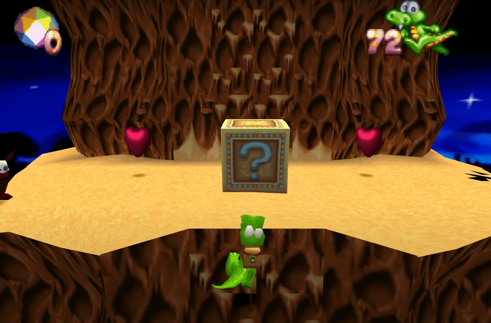


 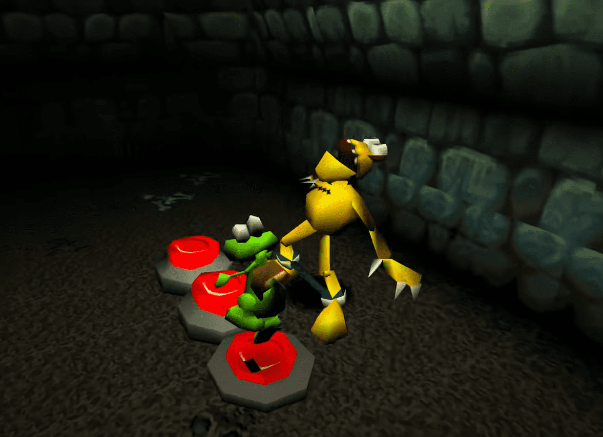
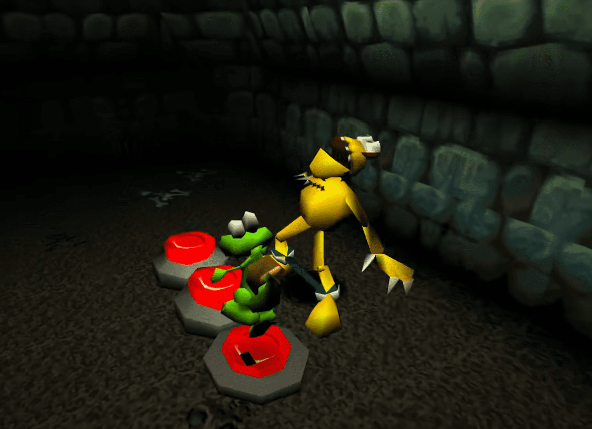

Croc: Legends of the gobbos (1997)
Croc: Legends of the gobbos es un videojuego de plataformas en 3D en tercera persona en el que el jugador controla al personaje principal, un cocodrilo verde llamado Croc, a través de varios cursos que se realizan en varias islas en todo el valle de Gobbo.El objetivo principal de cada nivel es navegar a través del escenario y llegar al gong ubicado al final del nivel para transportar a Croc al siguiente, al tiempo que se guarda el mayor número posible de Gobbos capturados encarcelados a lo largo del escenario. Ciertas etapas también contienen enemigos conocidos como "Guardianes" que Croc debe derrotar para avanzar a la siguiente etapa.